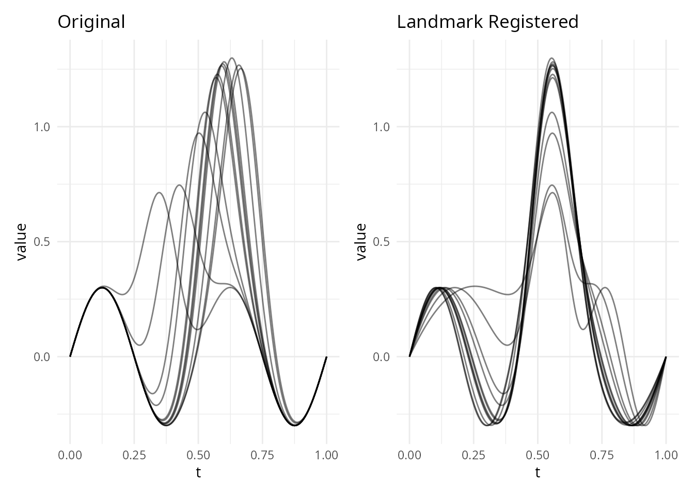
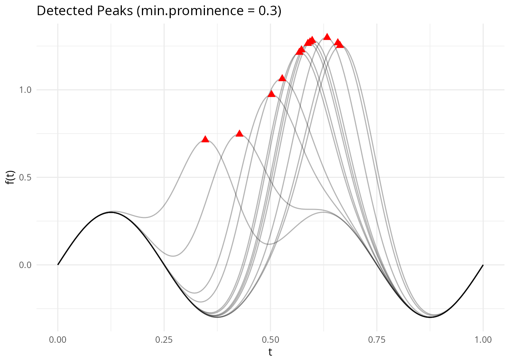
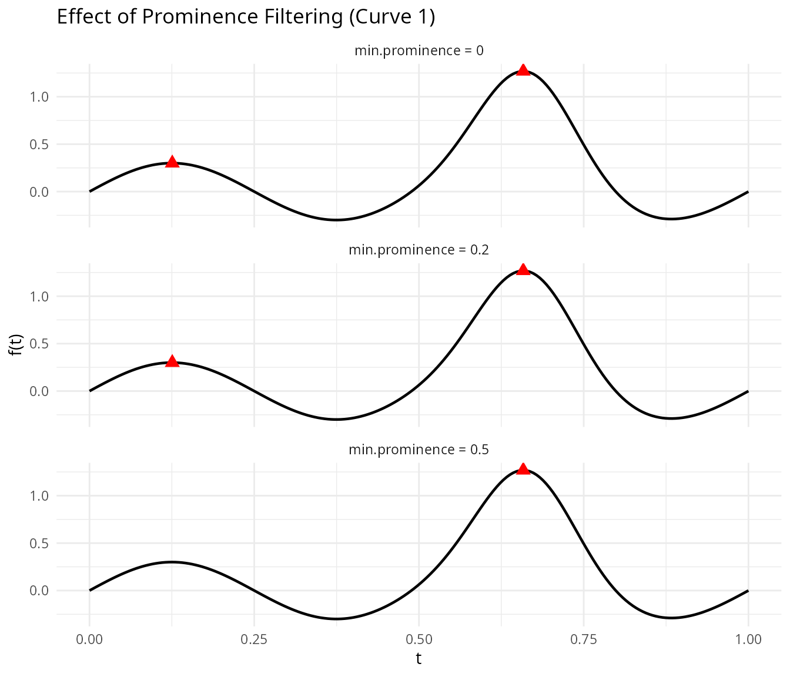
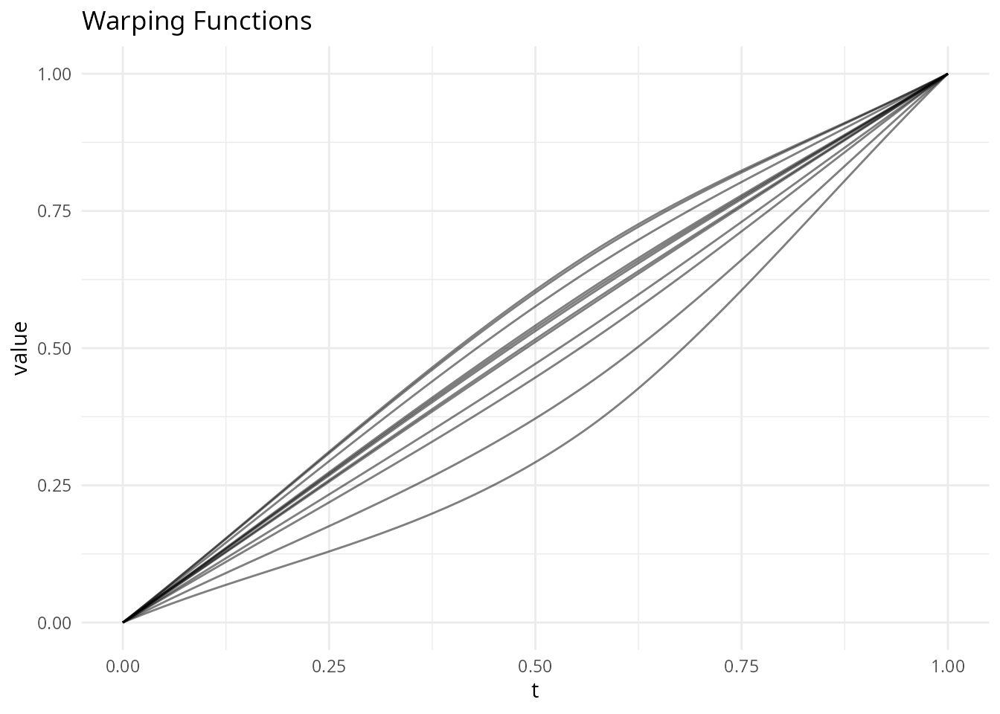
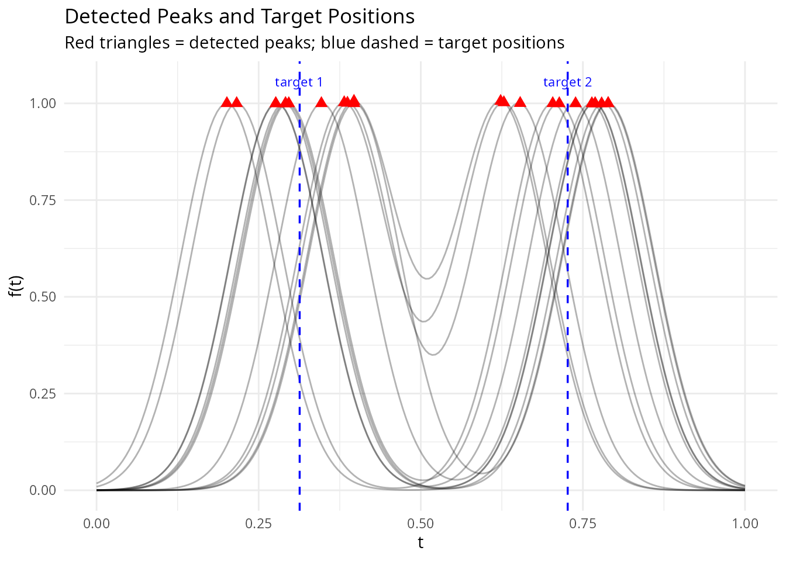
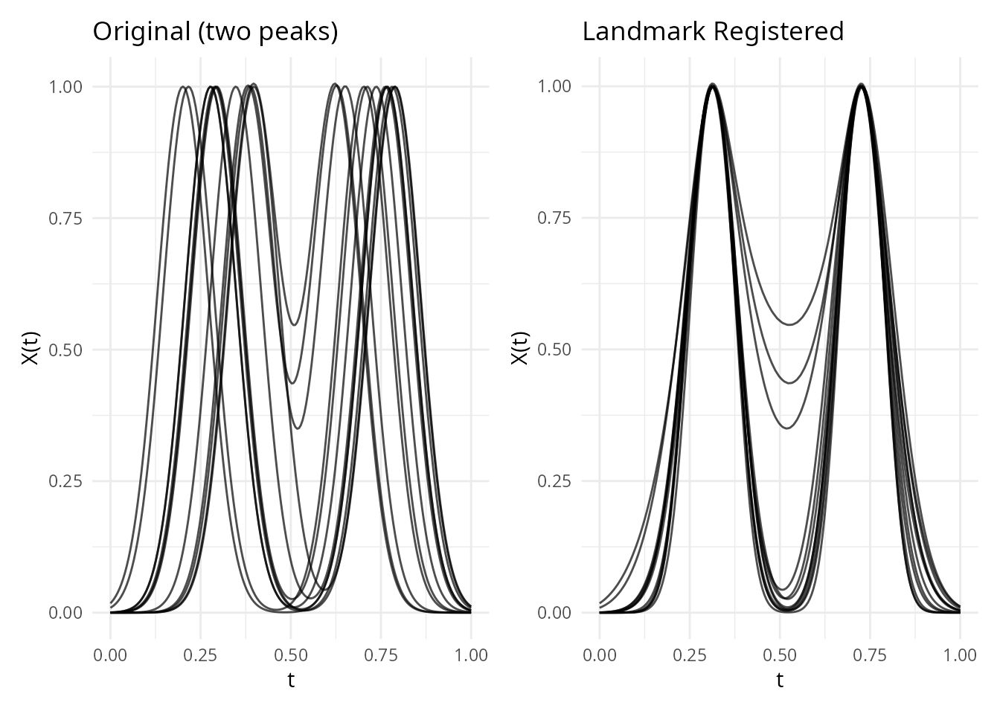
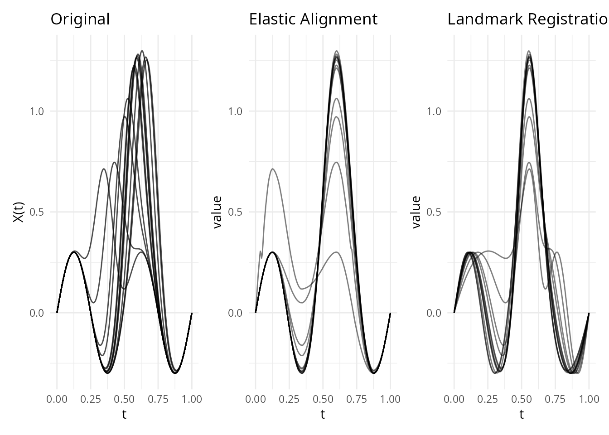
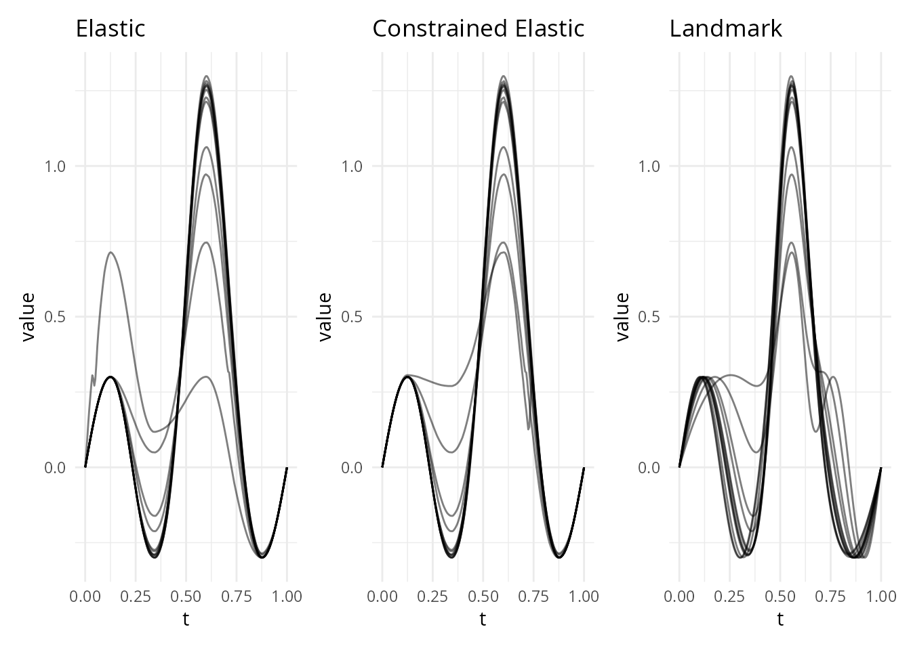

Landmark Registration
Source:vignettes/articles/landmark-registration.Rmd
landmark-registration.RmdIntroduction
Landmark registration aligns functional data by identifying salient features – peaks, valleys, zero-crossings, or inflection points – and warping curves so that corresponding features occur at the same time. Unlike elastic alignment, which searches for the globally optimal warping function via dynamic programming, landmark registration anchors the warping at specific feature locations and interpolates between them.
This approach is particularly useful when:
- Curves have identifiable, biologically or physically meaningful features (e.g., the P, QRS, and T waves in an ECG, peak force in a gait cycle)
- Features are sparse and can be reliably detected
- You want alignment to respect domain knowledge about which features should coincide
How It Works (Intuition)
Landmark registration works like aligning sheet music by lining up the bar lines. You identify specific landmarks – prominent peaks, valleys, or zero-crossings – in each curve, then stretch or compress the time axis so that corresponding landmarks occur at the same position.
The approach is simple:
- Detect features in each curve (e.g., the tallest peak)
- Match features across curves (the tallest peak in curve 1 corresponds to the tallest peak in curve 2, etc.)
- Compute target positions by averaging where each feature occurs across all curves
- Warp each curve so its features move to the target positions, with straight-line interpolation between landmarks
This is fast and interpretable – you know exactly which features are being aligned and why. The trade-off is that the warping is piecewise-linear (with corners at landmark positions) rather than smooth, and you need features that can be reliably detected.
Mathematical Framework
The Registration Problem
Given a sample of curves observed on a common domain , registration seeks warping functions such that the registered curves have their salient features aligned.
In the landmark approach, we identify corresponding feature times in each curve , and common target times . The warping function must satisfy:
with boundary conditions and .
Piecewise-Linear Warping
The simplest solution is piecewise-linear interpolation between the anchor points (boundaries plus landmarks). Let , , and similarly , . For :
This warping is monotone (orientation-preserving) as long as the landmarks are in the same order in every curve. The derivative is piecewise constant, with value on each segment.
Target Landmark Selection
The common target times are chosen as the average of the detected landmark positions across curves:
This minimizes the total squared warping (in the piecewise-linear sense) and ensures the target positions are representative of the sample.
Prominence and Feature Detection
A peak at time in a curve is a local maximum: for all in a neighborhood of . Its prominence is defined as:
where and are the nearest higher peaks to the left and right (or the domain boundaries). Prominence measures how much a peak stands out from its surroundings – a peak nestled on the flank of a larger peak has low prominence, while an isolated peak has high prominence.
Valleys are detected analogously (as peaks of ). Zero-crossings are points where changes sign, and inflection points are where changes sign.
Quick Start
set.seed(42)
argvals <- seq(0, 1, length.out = 200)
# Simulate curves with a shifted peak
n <- 12
data <- matrix(0, n, 200)
peak_locs <- runif(n, 0.3, 0.7)
for (i in 1:n) {
data[i, ] <- exp(-100 * (argvals - peak_locs[i])^2) +
0.3 * sin(4 * pi * argvals)
}
fd <- fdata(data, argvals = argvals)
# Register using detected peaks
lr <- landmark.register(fd, kind = "peak", min.prominence = 0.5,
expected.count = 1)
print(lr)
#> Landmark Registration
#> Curves: 12 x 200 grid points
#> Target landmarks: 1
#> Target positions: 0.557
plot(lr, type = "both")
The registered curves now have their dominant peak aligned to a common position.
Detecting Landmarks
Before registration, you can inspect which landmarks are detected in
each curve. The detect.landmarks() function finds features
of a given type and returns their position, value, and prominence.
lms <- detect.landmarks(fd, kind = "peak", min.prominence = 0.3)
# Show landmarks for first 3 curves
for (i in 1:3) {
cat("Curve", i, ":\n")
print(lms[[i]])
cat("\n")
}
#> Curve 1 :
#> position kind value prominence
#> 1 0.6582915 peak 1.268322 1.557776
#>
#> Curve 2 :
#> position kind value prominence
#> 1 0.6633166 peak 1.252722 1.538256
#>
#> Curve 3 :
#> position kind value prominence
#> 1 0.4271357 peak 0.7461648 0.7461648Visualizing detected landmarks overlaid on the curves makes it easier to verify that detection is working correctly:
# Build data frame of all curves
n_curves <- nrow(fd$data)
m_pts <- length(fd$argvals)
df_curves <- data.frame(
curve = rep(seq_len(n_curves), each = m_pts),
t = rep(fd$argvals, n_curves),
value = as.vector(t(fd$data))
)
# Build data frame of detected landmarks
df_lms <- do.call(rbind, lapply(seq_along(lms), function(i) {
if (nrow(lms[[i]]) > 0) {
data.frame(curve = i, t = lms[[i]]$position, value = lms[[i]]$value)
}
}))
ggplot() +
geom_line(data = df_curves, aes(x = t, y = value, group = curve),
alpha = 0.3) +
geom_point(data = df_lms, aes(x = t, y = value),
color = "red", size = 2.5, shape = 17) +
labs(title = "Detected Peaks (min.prominence = 0.3)",
x = "t", y = "f(t)") +
theme_minimal()
Landmark Types
Four types of landmarks can be detected:
| Kind | Description |
|---|---|
"peak" |
Local maxima |
"valley" |
Local minima |
"zero" |
Zero-crossings (sign changes) |
"inflection" |
Inflection points (curvature sign changes) |
# Detect valleys and zero-crossings
valleys <- detect.landmarks(fd, kind = "valley", min.prominence = 0.1)
zeros <- detect.landmarks(fd, kind = "zero")
cat("Curve 1 peaks:\n")
#> Curve 1 peaks:
print(lms[[1]])
#> position kind value prominence
#> 1 0.6582915 peak 1.268322 1.557776
cat("\nCurve 1 valleys:\n")
#>
#> Curve 1 valleys:
print(valleys[[1]])
#> position kind value prominence
#> 1 0.3768844 valley -0.2996805 0.5996712
#> 2 0.8844221 valley -0.2894549 0.2894691
cat("\nCurve 1 zero-crossings:\n")
#>
#> Curve 1 zero-crossings:
print(zeros[[1]])
#> position kind value prominence
#> 1 0.2499997 zero_crossing 0 0
#> 2 0.4885279 zero_crossing 0 0
#> 3 0.7986067 zero_crossing 0 0
#> 4 0.9999962 zero_crossing 0 0Prominence Filtering
The min.prominence parameter filters out minor features.
A peak’s prominence measures how much it stands out
from its surroundings – the minimum vertical drop required to reach a
higher peak. Setting a higher threshold keeps only the most salient
features:
# All peaks (no filtering)
lms_all <- detect.landmarks(fd, kind = "peak", min.prominence = 0)
cat("Curve 1 - all peaks:", nrow(lms_all[[1]]), "\n")
#> Curve 1 - all peaks: 2
# Only prominent peaks
lms_prominent <- detect.landmarks(fd, kind = "peak", min.prominence = 0.5)
cat("Curve 1 - prominent peaks:", nrow(lms_prominent[[1]]), "\n")
#> Curve 1 - prominent peaks: 1The effect of prominence filtering is clearest when plotted. Low prominence thresholds keep minor bumps; higher thresholds retain only the dominant feature:
# Show curve 1 with three prominence levels
curve1_df <- data.frame(t = fd$argvals, value = fd$data[1, ])
make_lm_df <- function(lm_list, label) {
li <- lm_list[[1]]
if (nrow(li) > 0) data.frame(t = li$position, value = li$value, level = label)
else data.frame(t = numeric(0), value = numeric(0), level = character(0))
}
lms_0 <- detect.landmarks(fd, kind = "peak", min.prominence = 0)
lms_02 <- detect.landmarks(fd, kind = "peak", min.prominence = 0.2)
lms_05 <- detect.landmarks(fd, kind = "peak", min.prominence = 0.5)
df_pts <- rbind(
make_lm_df(lms_0, "min.prominence = 0"),
make_lm_df(lms_02, "min.prominence = 0.2"),
make_lm_df(lms_05, "min.prominence = 0.5")
)
df_pts$level <- factor(df_pts$level,
levels = c("min.prominence = 0", "min.prominence = 0.2", "min.prominence = 0.5"))
ggplot(curve1_df, aes(x = t, y = value)) +
geom_line(linewidth = 0.8) +
geom_point(data = df_pts, aes(x = t, y = value),
color = "red", size = 3, shape = 17) +
facet_wrap(~level, ncol = 1) +
labs(title = "Effect of Prominence Filtering (Curve 1)",
x = "t", y = "f(t)")
Registration
The landmark.register() function detects landmarks in
every curve, computes common target positions (by averaging detected
landmark positions), and warps each curve so that its landmarks map to
the targets.
lr <- landmark.register(fd, kind = "peak", min.prominence = 0.5,
expected.count = 1)The result is an S3 object of class "landmark.register"
containing:
-
registered– anfdataof warped curves -
gammas– anfdataof warping functions -
landmarks– detected landmarks for each curve -
target_landmarks– the common target positions
plot(lr, type = "warps")
The warping functions are piecewise-linear, with knots at the landmark positions. Between landmarks, the warping is a simple linear interpolation.
Expected Count
When expected.count > 0, the function selects the
most prominent landmarks up to that count. This is useful when different
curves have different numbers of detected features but you know the true
number of corresponding features:
# Data with two peaks per curve
data2 <- matrix(0, n, 200)
for (i in 1:n) {
pk1 <- runif(1, 0.2, 0.4)
pk2 <- runif(1, 0.6, 0.8)
data2[i, ] <- exp(-100 * (argvals - pk1)^2) +
exp(-100 * (argvals - pk2)^2)
}
fd2 <- fdata(data2, argvals = argvals)
lr2 <- landmark.register(fd2, kind = "peak", min.prominence = 0.3,
expected.count = 2)
cat("Target landmarks:", round(lr2$target_landmarks, 3), "\n")
#> Target landmarks: 0.313 0.727
# Show detected landmarks on the two-peak data
lms2 <- detect.landmarks(fd2, kind = "peak", min.prominence = 0.3)
df_curves2 <- data.frame(
curve = rep(seq_len(n), each = 200),
t = rep(argvals, n),
value = as.vector(t(fd2$data))
)
df_lms2 <- do.call(rbind, lapply(seq_along(lms2), function(i) {
if (nrow(lms2[[i]]) > 0) {
data.frame(curve = i, t = lms2[[i]]$position, value = lms2[[i]]$value)
}
}))
target_df <- data.frame(t = lr2$target_landmarks)
ggplot() +
geom_line(data = df_curves2, aes(x = t, y = value, group = curve), alpha = 0.3) +
geom_point(data = df_lms2, aes(x = t, y = value),
color = "red", size = 2.5, shape = 17) +
geom_vline(data = target_df, aes(xintercept = t),
linetype = "dashed", color = "blue", linewidth = 0.6) +
annotate("text", x = lr2$target_landmarks, y = max(fd2$data) * 1.05,
label = paste("target", seq_along(lr2$target_landmarks)),
color = "blue", size = 3) +
labs(title = "Detected Peaks and Target Positions",
subtitle = "Red triangles = detected peaks; blue dashed = target positions",
x = "t", y = "f(t)")
p1 <- plot(fd2) + labs(title = "Original (two peaks)")
p2 <- plot(lr2$registered) + labs(title = "Landmark Registered")
p1 + p2
Comparison with Elastic Alignment
Landmark and elastic alignment solve the same problem – removing phase variability – but with different strategies. Landmark registration is fast and guarantees feature correspondence, while elastic alignment produces smooth, globally optimal warps without requiring feature detection.
# Same data, two approaches
ea <- elastic.align(fd)
p1 <- plot(fd) + labs(title = "Original")
p2 <- plot(ea, type = "aligned") + labs(title = "Elastic Alignment")
p3 <- plot(lr, type = "registered") + labs(title = "Landmark Registration")
p1 + p2 + p3
You can also combine both approaches via
elastic.align.constrained(), which runs elastic alignment
through landmark anchor points – smooth warps with guaranteed feature
correspondence:
ec <- elastic.align.constrained(fd, kind = "peak", min.prominence = 0.5,
expected.count = 1)
p_ea <- plot(ea, type = "aligned") + labs(title = "Elastic")
p_ec <- plot(ec, type = "aligned") + labs(title = "Constrained Elastic")
p_lr <- plot(lr, type = "registered") + labs(title = "Landmark")
p_ea + p_ec + p_lr
For a detailed side-by-side comparison of all alignment methods
(elastic, landmark, constrained, TSRVF) with variance reduction metrics
and a decision guide, see
vignette("alignment-comparison", package = "fdars").
See Also
-
vignette("elastic-alignment", package = "fdars")– elastic alignment framework -
elastic.align.constrained()– constrained elastic alignment -
alignment.quality()– diagnostics for alignment results